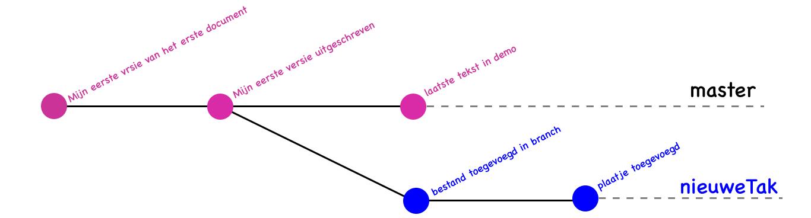

Leerdoelen
- Initialisatie van Git-repository
- bestanden op stage plaatsen
- committen
- commits opvragen
- branches maken
Opfrissen les CLI o.a.
- het starten van de Terminal
- directory === mapje === folder
- CLI-opdrachten worden uitgevoerd vanuit de huidige directory
lscdmkdirrmecho tekst > bestandopen -e mijnTekst.txt
Herhaalopdracht
Maak een mapje f1m1 en ga er met Terminal naar toe.
Maak daarin onderstaande directory-structuur:
f1m1
├── beroep
├── pvaardig
│ ├── Les01
│ ├── Les02
│ ├── Les03
│ ├── Les04
│ ├── Les05
│ ├── Les06
│ ├── Les07
│ └── Les08
└── python
Git installeren
Git installeren
- Als je Xcode al op je Mac hebt, ben je al klaar: Git zit daarbij.
- Heb je Homebrew al dan met
brew install gitlink naar bonusopdracht les CLI - gewoon installeren met een installatie van Tim Harper
- Wil je de laatste update van Git en je hebt Git al: dan via CLI:
git clone https://github.com/git/git
Geef in de CLI git --version om vast te stellen of je Git hebt
Stappenplan voor eenvoudige commits in
Stap 01
git init
Met deze opdracht maakt git voor jouw project eenmaal een git-repositry aan.
Zonder deze initialisatie heb je geen repository en kan Git niet werken.-
Stap 02
git add bestandsnaam
Plaatst bestand(en) op de stage.
Je bepaalt hier welke opgeslagen bestanden in de commit terecht komen -
Stap 03
git commit -m "beschrijving van de commit"
Maakt een 'snapshot' van de bestanden op de stage.
Deze kun je op een later moment weer terughalen.
De stage is met dexe opdracht weer leeg.
- Je kunt nu stap 02 en stap 03 hierboven zo vaak herhalen als je nodig vindt
git loggeeft een overzicht van de commits in jouw repositorygit statusgeeft een overzicht van de bestanden, die op de stage staan of als de stage leeg is.
Doe dit in het begin vaak, zodat je leert hoe het proces verloopt.
instructievideo
kennismaken met Git
en de eerste commits maken
Directe link naar de video op YouTubeBranches (zijtakken)
Werken met verschillende versies in
git branch naamVanDeBranch maakt een nieuwe branch aan.
git branch geeft een overzicht van de branches en markeert de branch waar je in werkt.
Technisch aangeduid: waar de HEAD van Git is.
git checkout naamVanDeBranch laat de HEAD naar die bracnh overgaan.
Git opdrachten zullen dan in die nieuwe branch uitgevoerd worden.
master is de naam van de hoofdbranch waar de repository mee start.
Met git checkout master keer je daarin terug.

commits in 2 branches in

instructievideo
branches in
om zo de versies te beheren
Directe link naar de video op YouTubeWoordenlijst
repository
Een geheel van bestanden, commits, branches en daarmee de versiegeschiedenis van een project.
In de spreektaal wordt dit afgekort naar repo.
commit
Een snapshot van de bestanden op een bepaald moment.
Door bestanden op de stage te zetten (in de spotlight) geef je aan welke bestanden in de commit worden meegenomen.
branch
Afsplitsing van de repository bedoeld om tijdelijk verder te werken. De hoofd branch in Git is de master-branch.
master
De standard branch in een Git repository.
Je kunt het opvatten als de hoofd-branch. Andere branches splitsen van deze master af.
HEAD
De plek in de branch waar Git aan het kijken is. Deze wisselt waanneer je met git checkout een andere branch kiest.
Je kunt het eigenlijk vergelijken met de CWD (huidige directory) bij de CLI.
opdracht
- Maak zelf een projectje zoals in de dia's hiervoor.
Maak 3 branches (inclusief master) en elke branch minimaal 2 commits. -
git logDat laat zien dat het je is gelukt. - Met de CLI zet je deze git log in een tekstbestandje met de naam
gitLog.txt
git log > gitLog.txt - Dit bestand gitlog.txt inleveren in Magister.